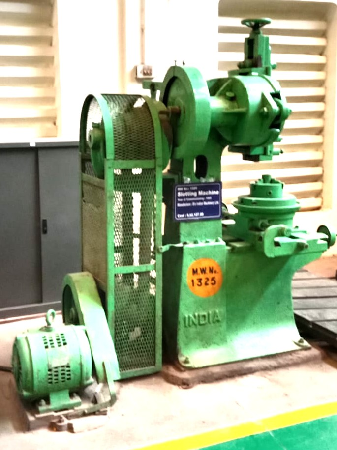

| Machine Name | Slotting Machine |
| M.W.No. | 1325 |
| Manufacturer | Hydraulic Trainer Machine |
| Machine Type | Hydraulic Slotting Machine |
| Year of Commissioning | N/A |
| Cost | N/A |
BLW Workshop, Varanasi, Uttar Pradesh, India
A Slotting Machine is a reciprocating machine tool used for machining slots, keyways, grooves and internal surfaces. The hydraulic slotting machine provides smooth and uniform cutting motion through a hydraulic drive system, making it suitable for precision machining operations.
The Slotting Machine works on the principle of reciprocating motion. A single-point cutting tool mounted on the ram moves vertically in an up-and-down direction. During the downward stroke, the cutting tool removes material from the stationary workpiece, while the upward stroke is the return stroke during which no cutting takes place. After each cutting stroke, the work table is fed automatically or manually by a small amount so that the next cut is made. This repeated reciprocating motion continues until the required slot, keyway, groove, internal profile, or square hole is produced with the desired dimensions and accuracy. In BLW workshops, the Slotting Machine is widely used for machining keyways, internal slots, splines, and other precision features in locomotive components during manufacturing and maintenance operations.
The Slotting Machine is used in BLW workshops for machining keyways, internal slots, splines and special profiles in locomotive components. It is an important machine for maintenance, repair and manufacturing activities where precision internal machining is required.
Workshop Supervisor: ___________